Legendary Pokémon
TIP
Every legendary, mythical, Ultra Beast and Paradox Pokémon is somewhere in Hoenn. Most are static encounters that appear at 3 badges (a handful of small mythicals at your own level), 6 badges, 8 badges or after the Hall of Fame: walk up, press A, battle. Click any card for its map, the exact spot (★), what unlocks it and how to get there. Emerald's own events (the Regis, the weather titans, the ferry islands) keep their puzzles and are listed last.Unlock: 3 badges (small mythicals at your level)


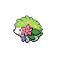
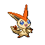
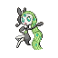


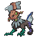
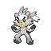
Unlock: 6 badges
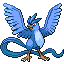
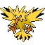

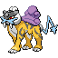


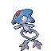


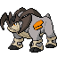


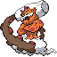

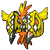


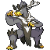
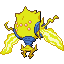
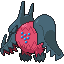
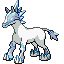
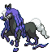


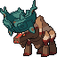

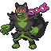


Unlock: 8 badges
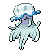
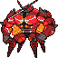


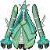
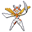


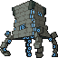

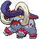
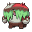
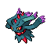


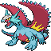


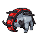
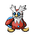
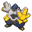


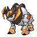

Unlock: Champion

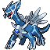
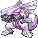


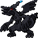
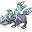
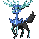


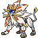


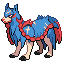


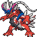


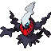
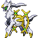

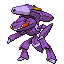


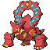


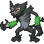

Emerald's classic events


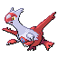


The four event islands need a ticket each. In Emma's Emerald every ticket comes from the Concierge desk (GRAMMY's desk in any Pokémon Center): pick Ferry tickets once you are Champion and you get the Eon Ticket, Old Sea Map, Aurora Ticket and Mystic Ticket in one go. Then talk to the sailor at the counter in Lilycove Harbor: with the tickets in your bag the ferry offers every island as a destination.
| Pokémon | Level | Island | Ticket | How |
|---|---|---|---|---|
| Latios or Latias | 50 (holds Soul Dew) | Southern Island | Eon Ticket | Walk to the Pokémon in the clearing. You get the one you did not pick on MOM's TV after the Hall of Fame; the other roams Hoenn's routes. |
| Mew | 30 | Faraway Island | Old Sea Map | Mew hides in the tall grass and copies your steps. Follow it until it stops, then talk to it. |
| Deoxys | 30 | Birth Island | Aurora Ticket | Triangle rock puzzle: press A, then reach the rock's new spot by the shortest path (one extra step resets it). From below the centre rock: A; 3 left 1 down, A; 3 right 5 up, A; 3 right 5 down, A; 5 left 3 up, A; 4 right, A; 2 left 2 down, A; 3 left 1 down, A; 6 right, A; 3 left, A; 3 up, A. |
| Ho-Oh | 70 | Navel Rock, top | Mystic Ticket | Take the stairs up from the fork. |
| Lugia | 70 | Navel Rock, bottom | Mystic Ticket | Take the stairs down from the fork. |